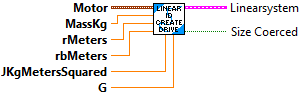

Create a state-space model of a DC motor system. The states of the system are [angular position, angular velocity], inputs are [voltage], and outputs are [angular position, angular velocity].
Create a state-space model of a DC motor system. The states of the system are
[angular position,
angular velocity]
inputs are
[voltage]
and outputs are
[angular position,
angular velocity].
Inputs:
- motor -- The motor (or gearbox)
- jKgMetersSquared -- The moment of inertia J of the motor and attached load. (Must be > 0)
- G -- The reduction between motor and drum, as a ratio of output to input. (Must be > 0)
Outputs:
- LinearSystem -- A LinearSystem representing the given characterized constants.
- Error -- A boolean indicating an error occured creating the system. A value of TRUE indicates an error.

Create a state-space model of a differential drive drivetrain. In this model, the states are [v_left, v_right]?, inputs are [V_left, V_right]? and outputs are [v_left, v_right]?.
Inputs:
- motor -- the gearbox representing the motors driving the drivetrain.
- massKg -- the mass of the robot.
- rMeters -- the radius of the wheels in meters.
- rbMeters -- the radius of the base (half the track width) in meters.
- JKgMetersSquared -- the moment of inertia of the robot.
- G -- the gearing reduction as output over input.
Outputs:
- LinearSystem -- A LinearSystem cluster representing a differential drivetrain.
- SizeCoerced -- A boolean indicating that sizes had to be adjusted. A value of TRUE indicates an error.

Create a state-space model of an elevator system. The states of the system are [position, velocity]?, inputs are [voltage], and outputs are [position].
Inputs:
- motor -- The motor (or gearbox) attached to the arm.
- massKg -- The mass of the elevator carriage, in kilograms.
- radiusMeters -- The radius of thd driving drum of the elevator, in meters.
- G -- The reduction between motor and drum, as a ratio of output to input.
Outputs:
- LinearSystem -- A LinearSystem representing the given characterized constants.
- SizeCoerced -- A boolean indicating that sizes had to be adjusted. A value of TRUE indicates an error.

Create a state-space model of a flywheel system. The states of the system are [angular velocity], inputs are [voltage], and outputs are [angular velocity].
Inputs:
- motor -- The motor (or gearbox) attached to the arm.
- jKgMetersSquared -- The moment of inertia J of the flywheel.
- G -- The reduction between motor and drum, as a ratio of output to input.
Outputs:
- LinearSystem -- A LinearSystem representing the given characterized constants.
- Error -- A boolean indicating an error occured creating the system. A value of TRUE indicates an error.

Create a state-space model of a single jointed arm system. The states of the system are [angle, angular velocity], inputs are [voltage], and outputs are [angle].
Inputs:
- motor -- The motor (or gearbox) attached to the arm.
- jKgSquaredMeters -- The moment of inertia J of the arm.
- G -- The gearing between the motor and arm, in output over input. Most of the time this will be greater than 1.
Outputs:
- LinearSystem -- A LinearSystem representing the given characterized constants.
- Error -- A boolean indicating an error occured creating the system. A value of TRUE indicates an error.

Identify a standard differential drive drivetrain, given the drivetrain's kV and kA in both linear (volts/(meter/sec) and volts/(meter/sec^2)) and angular (volts/(meter/sec) and volts/(meter/sec^2)) cases. This can be found using frc-characterization. The states of the system are [left velocity, right velocity]?, inputs are [left voltage, right voltage]?, and outputs are [left velocity, right velocity]?.
Inputs:
- kVLinear -- The linear velocity gain, volts per (meter per second).
- kALinear -- The linear acceleration gain, volts per (meter per second squared).
- kVAngular -- The angular velocity gain, volts per (meter per second).
- kAAngular -- The angular acceleration gain, volts per (meter per second squared).
Outputs:
- LinearSystem -- A LinearSystem representing the given characterized constants.
- SizeCoerced -- A boolean indicating an error occured creating the system. A value of TRUE indicates an error.
Additional information
https://github.com/wpilibsuite/frc-characterization

Identify a position system from it's kV (volts/(unit/sec)) and kA (volts/(unit/sec^2). These constants cam be found using frc-characterization. The states of the system are [position, velocity]?, inputs are [voltage], and outputs are [position].
The distance unit you choose MUST be an SI unit (i.e. meters or radians). You can use the Util.Units subVI for converting between unit types.
Inputs:
- kV -- The velocity gain, in volts per (units per second)
- kA -- The acceleration gain, in volts per (units per second squared)
Outputs:
- LinearSystem -- A LinearSystem representing the given characterized constants.
- SizeCoerced -- A value of TRUE indicates an unexpected error occured.
Additional information:
See https://github.com/wpilibsuite/frc-characterization @SuppressWarnings("ParameterName")

Identify a velocity system from it's kV (volts/(unit/sec)) and kA (volts/(unit/sec^2). These constants cam be found using frc-characterization. The states of the system are [velocity], inputs are [voltage], and outputs are [velocity].
The distance unit you choose MUST be an SI unit (i.e. meters or radians). You can use the Util.Units subVI for converting between unit types.
Inputs:
- kV -- The velocity gain, in volts per (units per second)
- kA -- The acceleration gain, in volts per (units per second squared)
Outputs:
- LinearSystem -- A LinearSystem representing the given characterized constants.
- SizeCoerced -- A value of TRUE indicates an unexpected error occured.
Additional information:
See https://github.com/wpilibsuite/frc-characterization